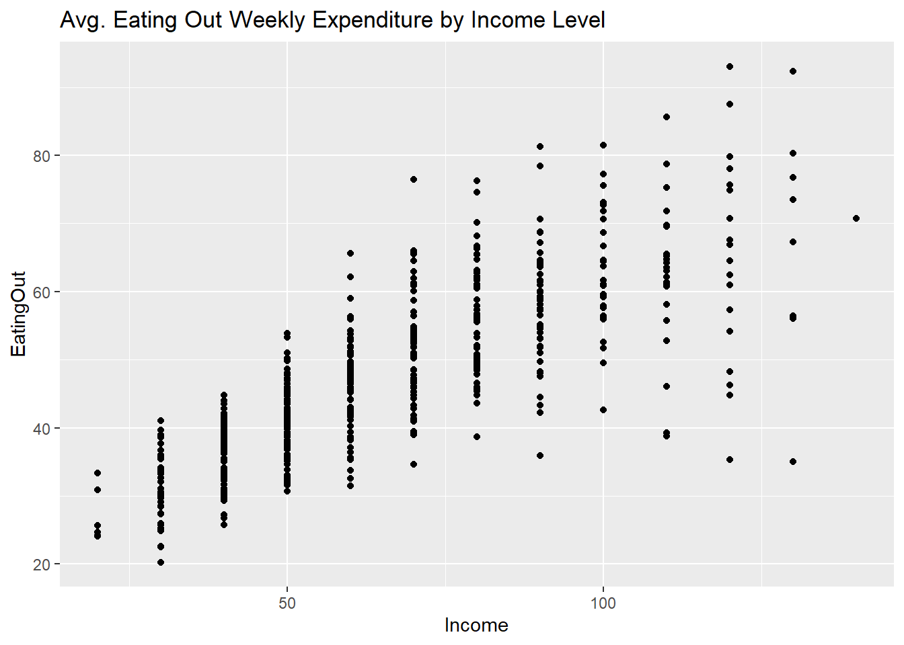
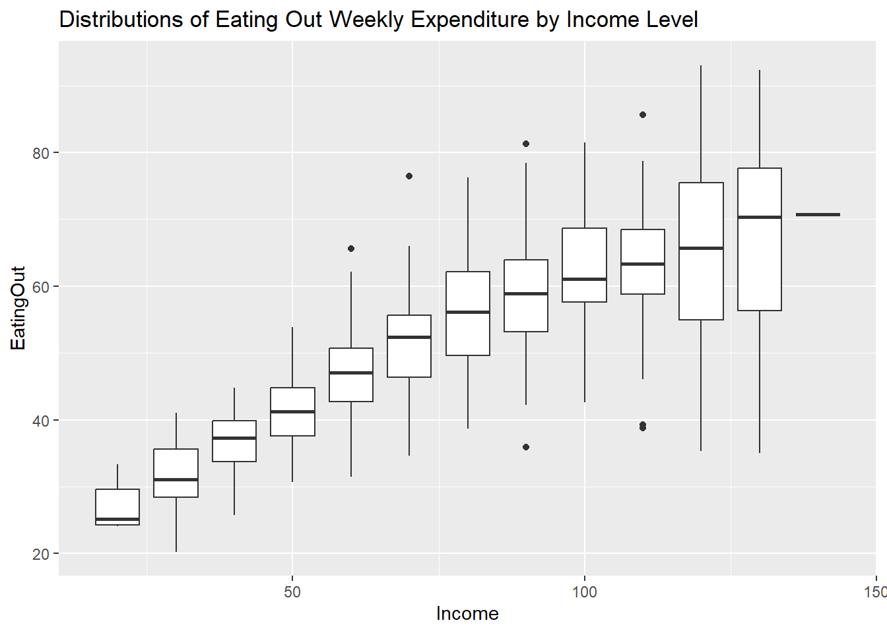
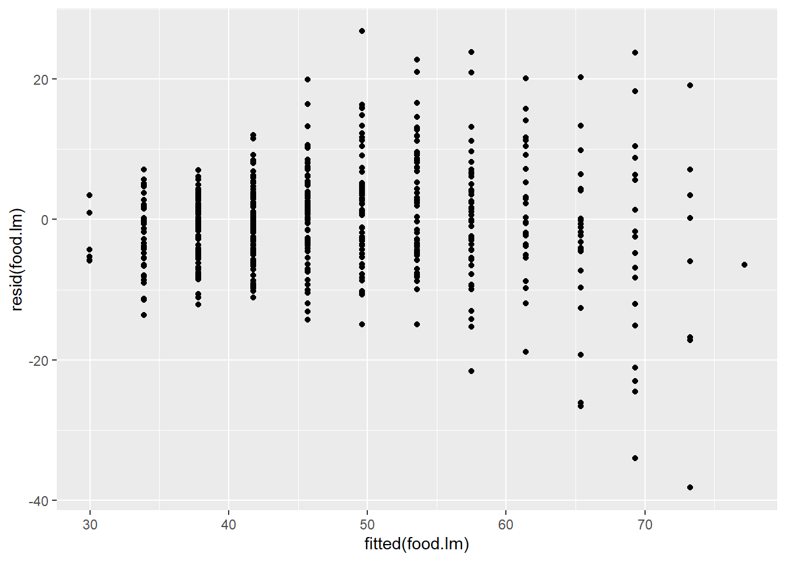

Warning: package 'tidyverse' was built under R version 4.2.3
Warning: package 'ggplot2' was built under R version 4.2.3
Warning: package 'tibble' was built under R version 4.2.3
Warning: package 'tidyr' was built under R version 4.2.3
Warning: package 'readr' was built under R version 4.2.3
Warning: package 'purrr' was built under R version 4.2.3
Warning: package 'dplyr' was built under R version 4.2.3
Warning: package 'lubridate' was built under R version 4.2.3
── Attaching core tidyverse packages ──────────────────────── tidyverse 2.0.0 ──
✔ dplyr 1.1.2 ✔ readr 2.1.4
✔ forcats 1.0.0 ✔ stringr 1.5.0
✔ ggplot2 3.4.4 ✔ tibble 3.2.1
✔ lubridate 1.9.2 ✔ tidyr 1.3.0
✔ purrr 1.0.2
── Conflicts ────────────────────────────────────────── tidyverse_conflicts() ──
✖ dplyr::filter() masks stats::filter()
✖ dplyr::lag() masks stats::lag()
ℹ Use the conflicted package (<http://conflicted.r-lib.org/>) to force all conflicts to become errors
library(lmtest)
Warning: package 'lmtest' was built under R version 4.2.3
Loading required package: zoo
Warning: package 'zoo' was built under R version 4.2.3
Attaching package: 'zoo'
The following objects are masked from 'package:base':
as.Date, as.Date.numeric
food <-read_delim("FoodExpenses.txt", delim=" ")
Rows: 523 Columns: 2
── Column specification ────────────────────────────────────────────────────────
Delimiter: " "
dbl (2): Income, EatingOut
ℹ Use `spec()` to retrieve the full column specification for this data.
ℹ Specify the column types or set `show_col_types = FALSE` to quiet this message.
1: Exploratory Plots and Summary Statistics
ggplot(data = food, aes(y = EatingOut, x = Income)) +geom_point() +ggtitle("Avg. Eating Out Weekly Expenditure by Income Level")

There seems to be a positive linear relationship between annual household income and average weekly expenditure on food not cooked at home. However, it looks like the variance might grow larger as Income grows larger.
ggplot(data = food, aes(y = EatingOut, x = Income, group=Income)) +geom_boxplot() +ggtitle("Distributions of Eating Out Weekly Expenditure by Income Level")

Because Income is a discrete variable, this shows the distributions of Average weekly eating out expenditure per income level. This still shows a positive relationship between the two variables, and again shows how the variance seems to grow as the income increases.
Here are the summary statistics:
summary(food)
Income EatingOut
Min. : 20.00 Min. :20.27
1st Qu.: 45.00 1st Qu.:38.65
Median : 60.00 Median :46.53
Mean : 65.97 Mean :48.04
3rd Qu.: 80.00 3rd Qu.:56.40
Max. :140.00 Max. :93.06
2: Fit homoskedastic linear model
food.lm <-lm(EatingOut ~ ., data = food)summary(food.lm)
Call:
lm(formula = EatingOut ~ ., data = food)
Residuals:
Min 1Q Median 3Q Max
-38.182 -4.364 0.154 4.068 26.819
Coefficients:
Estimate Std. Error t value Pr(>|t|)
(Intercept) 22.08512 0.94449 23.38 <2e-16 ***
Income 0.39351 0.01333 29.52 <2e-16 ***
---
Signif. codes: 0 '***' 0.001 '**' 0.01 '*' 0.05 '.' 0.1 ' ' 1
Residual standard error: 7.88 on 521 degrees of freedom
Multiple R-squared: 0.6258, Adjusted R-squared: 0.6251
F-statistic: 871.3 on 1 and 521 DF, p-value: < 2.2e-16
ggplot()+geom_point(mapping=aes(x=fitted(food.lm), y =resid(food.lm)))

bptest(food.lm)
studentized Breusch-Pagan test
data: food.lm
BP = 66.388, df = 1, p-value = 3.704e-16
The equal variance assumption is not met. From the residuals vs. fitted values plot, the spread of the data points grows as income grows. This is confirmed by the Breusch-Pagan test, where we can reject the null hypothesis that there is equal variance and assume the variance is unequal.
3: Write down heteroskedastic model
4: Fit Model from Q3 to Eating Out and check assumptions